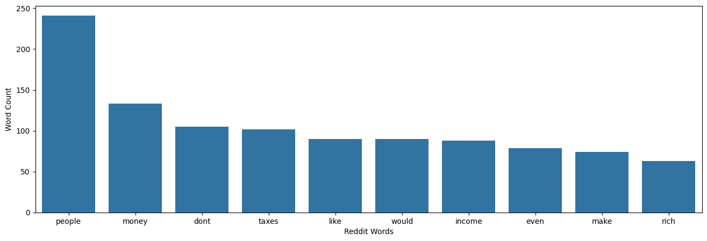
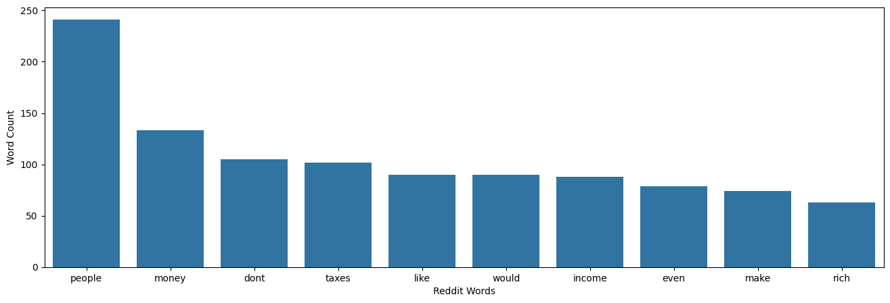
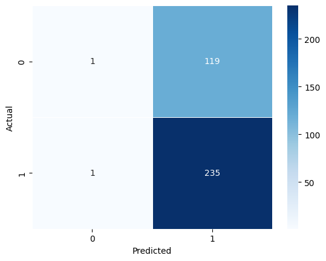

Social Inequality
Introduction
Across the globe, there have been calls to increase tax rates for the wealthier portions of society as social inequality has risen. Many people believe that increasing taxes on the rich and decreasing government spending could help to solve these problems and make life more affordable for those with lower incomes.
Data Collection
In order to gain insights into peoples’ opinions on the issue, I gathered all 2,291 comments, after dropping nulls, from a Reddit post titled “Calls to tax the super-rich grow as economic inequality surges.” The comments below this post detail a discussion about the validity of the idea of taxing the rich, how it should be done, and other suggestions for how to increase economic equality and the number of people with liveable incomes. In order to analyze the sentiment people have towards changing economic policy to increase taxes on the rich, I intend on using both TextBlob and VADER and comparing them together in order to get a well rounded view on what sentiment is. After that, I plan to use Sklearn Logistic Regression to create a model that predicts whether or not a comment has positive or negative sentiment depending on the number of characters in it, the number of words, and the number of upvotes it has.
Sentiment Analysis
I began my analysis by preprocessing the comments: making them all lower case, removing quotes, removing @ patterns, removing # patterns, removing www.s and urls, replacing parentheses, exclamation points, and question marks with spaces, removing square brackets and text within them, replacing non alphanumeric characters with spaces, removing words with less than 4 letters, and removing stopwords. This resulted in a clean dataset that could be used to look at which words occurred most often in the comments, visualized by this wordcloud.
I then looked at numerically which one appeared the most often and how many times, which turned out to be “people” and “rich” which appeared 796 and 494 times respectively. The top 10 most common words are graphed below.
These word choices indicate that the topics of this comment section focus on the effects on people that changing tax policy could have as well as the resulting effects on the rich, their income, and the income of everyone else. It’s interesting to point out that “people” is such an outlier, which indicates that this comment section is concerned with the impact on people that tax policies have above all else.
From there, I used TextBlob to analyze both the sentiment and subjectivity of each comment. After counting how many comments fell into each category the breakdown looked like this: Positive Sentiment 1168, Neutral Sentiment 611, and Negative Sentiment 512. This indicated that the majority of comments under this post had positive sentiment. This seemed strange to me, as when reading through the comments myself, a lot of them seemed to be extremely negative and hateful of the egregiously wealthy. When counting the number categorized as objective or subjective, the counts came out to be: Objective, 1437 and Subjective, 854. The distribution of sentiment values is pictured below.
The distribution of the subjectivity of posts is pictured below.
These two graphs indicate a couple of things to me: that TextBlob believes that the majority of comments tend to have slightly positive sentiment and that there is a pretty normal distribution of subjectivity across the posts, centered at 0.5, but there are a bunch of short posts, found through further investigation of the data, that make up a lot of highly objective posts. This results in the spike you see on the left side of the subjectivity graph.
For further analysis, I ran VADER sentiment analysis on the posts as well, finding the positive, negative, neutral, and compound sentiment for each comment. Then I graphed the distribution of each of them.
Using the compound sentiment score for each comment, I divided them up into positive, neutral and negative comments and counted them, resulting in these counts: Positive Sentiment 1180, Negative Sentiment 600, and Neutral Sentiment, 511. Together, the distribution graphs and the count belonging to each category, we can learn a few things. Firstly, for the most part VADER agrees with TextBlob that most of the comments have positive sentiment, but it also categorized more to have negative sentiment as well. The neutral sentiment distribution appears to be slightly left skewed, if you ignore high and low outliers. The positive sentiment distribution also has considerably higher values than the negative sentiment distribution as well. Together these things indicate to me that VADER has determined that a lot of comments are neutral, but other than a large spike, as visible in the compound sentiment graph, there just tend to be more posts that it thinks have positive sentiment, and there are also very few that have extremely negative sentiment.
These results were surprising to me, especially after I broke it down into the distributions of each of the subcategories of sentiment that make up the compound score. When I read through the comments myself, it was tough to find one that I would categorize as positive. Thus, I decided to look at this a bit longer.
I believed that this difference in sentiment understanding between my analysis and VADER’s had to do with the context what words were used in within the comments, but first I wanted to look at which words were common in the negative posts and which were common in the positive ones in order to compare to see why there was such a divergence from my expectation. Below is the word cloud and word count of the top 10 words from the positive sentiment posts.
Below is the word cloud and top 10 word count for the negative sentiment posts.
 

From these visualizations, it appeared to me that VADER considered “rich” and “wealth” to be strong positive words, which they might be considered in different contexts, but here, where people are posting about getting rid of the rich and spreading out the wealth, they are not good indicators of positive sentiment.
In order to try to combat this, I decided to make some changes to how VADER received the data in order to make it consider the original presentation and context of the word better by feeding in the data to it without any preprocessing. This would leave in capitalization, punctuation, and, essentially, more context. As a result, I believed that this would result in a lot more posts being categorized with negative sentiment as the contextual meaning of their words would be better considered. This resulted in counts of: Positive Sentiment 1119, Negative Sentiment 721, and Neutral Sentiment 451. Slightly less posts were categorized as both positive and neutral sentiment, resulting in a sizable increase in the proportion of negative sentiment posts, but the larger sentiment trends still remained as shown in this graph of the compound score of the unprocessed posts.
From here, I decided that there must just be a difference in which posts I read and what VADER interpreted from the total number of the posts and decided that perhaps a different NLP tool could be used to further analyze these posts.
Predictive Analysis
In order to predict whether or not a post has positive or negative sentiment without actually running TextBlob or VADER on it, I first filtered out all of the neutral posts. After that, I randomly split the data 80-20 into training and testing data, mapping positive sentiment to 1 and negative sentiment to 0. From there I trained a Sklearn Logistic Regression model with the training data, where the features were the upvotes on the post, the number of words in the post, and the number of characters in the post, and the label was whether it had positive sentiment. From this I found that: For an increase in the number of upvotes on a post by 1, the odds that the post has positive sentiment is 1.00026232 times as large as the odds that the post has negative sentiment. For an increase in the character count of a post by 1, the odds that the post has positive sentiment is 0.99791049 times as large as the odds that the post has negative sentiment. For an increase in the word count of a post by 1, the odds that the post has positive sentiment is 1.01590261 times as large as the odds that the post has negative sentiment. Then I found the performance statistics of this model. It was 66.29% accurate in predicting the chances that a post has positive sentiment. Its precision was 66.38%, recall score was 99.57%, and F1 score was 79.66%. I then ran a classification report that showed that the support for the 1 values was almost double the 0 values, 236 to 120. This analysis combined with the heatmap below reveals our problems.
The model was almost always predicting 1’s and I believe it was due to the large proportion of training data points that were labeled 1. This is supported by the high levels of support for 1 in the confidence report. Also the features chosen, the upvotes on the post, the number of words in the post, and the number of characters in the post, are not the most indicative of sentiment either. This model was produced with the preprocessed data from the sentiment analysis section, so I tried making one with the non preprocessed data, thinking that the slightly higher proportion of negative labels in training might make it perform better, but that was not the case. It had almost the exact same measures, from intercepts to performance measures, and its test performed essentially the same resulting in this heatmap.
This shows to me that the model could be improved in two possible ways: first, the training data could be set up so that an equal number of Positive and Negative Sentiment comments are in it to ensure that it trains evenly across the two possible outcomes, and different data points could be added that correlate more strongly to the sentiment level of the comment.
Conclusions
Out of this analysis, I have gathered that, to interpret the sentiment of these Reddit comments more accurately, I probably need a different library that does a better job with the context of words as the results that both TextBlob and VADER gave me were very surprising when it came to sentiment analysis. The subjectivity measure seemed to make sense, though. It appeared to me that when I gave VADER more context to work with, it output values that aligned more closely to my expectation, thus working with a model that does a better job with context could be a beneficial path forward.
The predictive models that I created were not surprising to me, as their inaccuracy was clearly reflected in the split of data used to train them as well as a clearly weak set of features used to make predictions. I would implement some of the strategies I outlined earlier with regard to ensuring equal training percentages and adding more or switching the data of each comment used to train the model.
If these changes were made, I believe that the process done here would be better reflective of the comments analyzed, as right now the sentiment analysis breakdown implies that the comments were overwhelmingly positive which disagrees strongly with my experience reading them and the predictive analysis almost always predicts all comments to be positive comments, mostly because of the overwhelming number of positively labeled comments from the sentiment analysis.